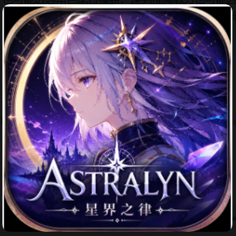

STAR-LAW / MAIN HUB
星界之律
界痕、回覆台與旅者的記錄，從這裡開始。
STAR-LAW ID / SECURE ENTRY
準備踏上旅途了嗎？
玩家進度、抽卡紀錄、保底與角色收集都會綁定在你的帳號。請先選擇登入方式。
商品以帳號資源購買；星海迷航途中取得的星海碎片只用於當次航程，不在這裡消費。
突破材料
每種素材本期最多購買 6 個，Boss 關卡仍可另外取得。
特殊角色造型
每款買一次永久收藏。未取得角色也可先收藏，取得角色後到培養頁選為上場圖片；造型不增加戰力。
資源轉換
雙向轉換有損耗；角色經驗換星砂每期最多 20 次。
在這裡查看版本內容、額外獎勵與重要系統變更。公告只會說明規則，不會取代你的玩家存檔。
STAR-LAW / PRIVATE SANDBOX
星律測試回廊
這是製作者測試入口。點開右下角的微光星印，可將測試資源寫入目前登入的帳號。
測試補給尚未領取。
4★成長倍率與經驗成本較高；3★培養成本較低。重複抽到角色時命座會立即自動增加。
FORMATION
出戰編隊
FORMATION
Boss 出戰編隊
FORMATION
派遣隊伍
隨機選擇航線，通過事件、商站、休整與戰鬥；不同選擇會帶你走向一般、隱藏或特殊結局。
HOW TO PLAY星海迷航遊玩指引選航線 → 編隊 → 做選擇 → 打敗終端
點選左側航線查看特色；沒有選擇時，開始航程會隨機抽一條。
點擊下方角色卡加入隊伍。每個戰鬥節點至少需要 1 名已取得角色，卡片會顯示個人戰力。
事件、休整與商店要選一個處理方式；戰鬥節點先查看敵人，再按下方按鈕進入自走棋戰鬥。
戰鬥勝利才會前進；失敗會結束本次航程，但角色與帳號資源不會被扣除，可以重新開航。
星海碎片只在本次航程使用，可於商店換臨時增益；回聲與增益會影響本趟路線與結局，完成或失敗後重置。
一般：完成終端。隱藏：開啟檔案門，或在無名檔案線累積 2 道回聲。特殊：三星與四星混編，並在三重回音室選「調和兩種頻率」。
一般、隱藏、特殊結局的獎勵每個版本各領一次；已領取的結局仍可再次探索，但不會重複發放同一份結局獎勵。
FORMATION
迷航出戰隊伍
使用食物、玩具與星伴代幣培育寵物；等級會提高戰鬥配屬的能力與機制效果。也能自由裝扮，公開展示讓其他玩家參觀。
CUSTOMIZATION
外觀與特效
選擇後會立即套用到預覽與公開展示。基礎寵物 PNG 保持原畫質，裝扮與特效以獨立圖層呈現，不會重繪或壓縮角色圖片。
關閉公開後，其他玩家將看不到你的展示，也不會影響你自己的寵物進度。
ARCHIVE
角色收集
PUBLIC LOG